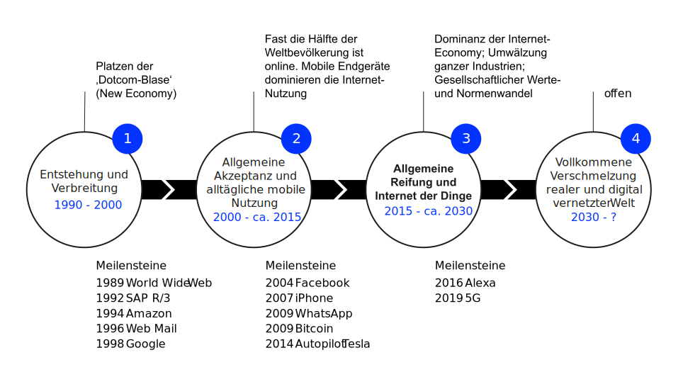
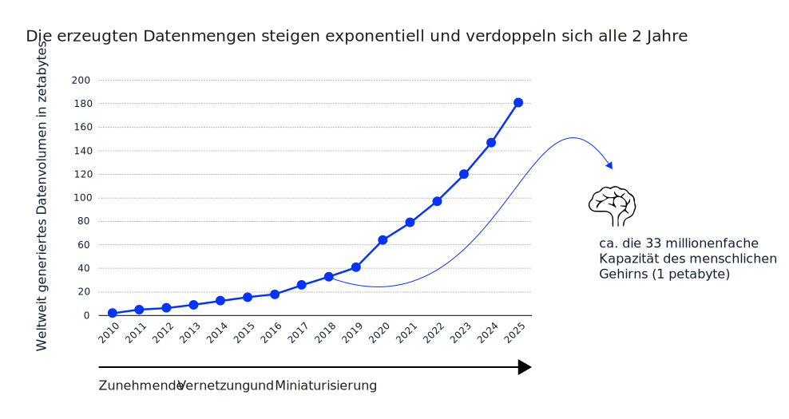

K2 Das digitale Zeitalter
Grundzüge Informationsmanagement (GIM)
Andy Weeger
University of Applied Sciences Neu-Ulm
Motivation
Karikaturen
Was moderne Technik mit unserem Leben macht …


Statements
Ich habe früher dazu einmal „Neuland“ gesagt. Das hat mir einen großen Shitstorm eingebracht. Deshalb will ich das jetzt nicht einfach wiederholen. Jedenfalls ist es aber in gewisser Weise noch nicht durchschrittenes Terrain. […] Das Ganze ist im Grunde eine revolutionäre Phase.
Angela Merkel, ehemalige Bundeskanzlerin
Every successful organization has to make the transition from a world defined primarily by repetition to one primarily defined by change. This is the biggest transformation in the structure of how humans work together since the Agricultural Revolution.
Bill Drayton, Social Entrepreneur, CEO of Ashoka
Wir leben in einer besonderen Zeit — dem digitalen Zeitalter. In diesem Kapitel lernen Sie kennen, was unsere Zeit auszeichnet und prägt.
Lernergebnisse
Nach dieser Einheit
- wissen Sie, was man unter digitalem Zeitalter versteht,
- verstehen Sie, auf welchen Ebenen im digitalen Zeitalter Vernetzung durch digitale Technologien vorangetrieben wird und können die Vernetzung und die Konsequenzen an Beispielen zeigen,
- können Sie die grundlegenden Mechanismen des digitalen Zeitalters erläutern und Beispiele zu geben,
- können Sie die Entwicklungsstufen anhand der Treiber und Mechanismen des digitalen Zeitalters erläutern und
- können Sie den Problemraum des digitalen Zeitalters anhand des Konzepts VUCA erläutern und auf die grundlegenden Mechanismen des digitalen Zeitalters beziehen.
Besonderheiten
Eigenschaften
Als das digitale (Informations-) Zeitalter wird der Zeitabschnitt verstanden, der maßgeblich durch Informations- und Kommunikationstechnik geprägt ist (Claudia Lemke, Brenner, und Kirchner 2017).
- Wertschöpfung ist geprägt von digitalen Daten (Verarbeitung, Übertragung)
- Arbeits- und Lebenswelt ist durchdrungen von IT (Prozesse, Produkte, Dienstleistungen)
- Technlogische Vernetzung ermöglicht und beschleunigt wirtschaftliche und soziale Vernetzung
- Grenzen von Raum und Zeit lösen sich zunehmend auf
Evolutionsstufen

Vernetzung
Datenvolumen

Gesetzmäßigkeiten
Mechanismen
Der technischen Fortschritt im digitalen Zeitalter scheint die grundlegenden Mechanismen des digitalen Zeitalters abzubilden.
Diese werden oft auch als Gesetzmäßigkeiten des digitalen Zeitalters bezeichnet und basieren sowohl auf technologischen als auch kommunikativen und sozialen Mechanismen (Claudia Lemke, Brenner, und Kirchner 2017, p. 23), wie beispielsweise
- Moore’s Law,
- Gilder’s Law,
- Metcalfe’s Law und
- dem Grundsatz Code is Law
Moore’s Law
Die Leistung in der digitalen Hardware wächst exponentiell
Das Mooresche „Gesetz“ besagt, dass sich bei gleichem Preis die Komplexität integrierter Schaltkreise und damit die Leistungsfähigkeit der Informations- und Kommunikationstechnik (IKT) alle 18 Monate verdoppelt (Moore u. a. 1965).
Das Gesetz zeigt, dass im digitalen Zeitalter regelmäßige Leistungsschübe und damit die Voraussetzung für Innovationssprünge zu erwarten sind.
Gilder’s Law
Die Übertragungsleistung digitaler Netze wächst exponentiell
Das Gildersche „Gesetz“ besagt, dass sich die Bandbreite der Datenübertragung mindestens dreimal schneller als die Steigerung der Leistungsfähigkeit der Computer erhöht, also dass sich ca. alle 6 Monate die Datenübertragungsrate bei gleichbleibender technologischer Basis verdoppelt (Gilder 2000).
Die Verfügbarkeit von Daten und die notwendige Bandbreite zur Übertragung beeinflussen sich wechselseitig.
Metcalfe’s Law
Ab einer bestimmten Größe eines Netzwerks übersteigt der Nutzen die Kosten
Metcalfesches Gesetz besagt, dass der Wert eines Netzwerkes im Quadrat mit der Anzahl seiner verbundenen Nutzer steigt (Claudia Lemke, Brenner, und Kirchner 2017).
Die Faustregel geht davon aus, dass der Nutzen Netzwerkes proportional zur Anzahl der möglichen Verbindungen zwischen den Teilnehmern (also zum Quadrat der Anzahl der Knoten) wächst, während die Kosten nur proportional zur Anzahl der Knoten selbst wachsen.
Code is Law
Technologie bestimmt wie Freiheit und Rechte definiert werden
Der Begriff “Code is Law” besagt, dass im Programmcode festgelegte Regeln eine quasi-gesetzgeberische Macht haben (Lessig 2009).
Das bedeutet, dass der Programmcode fundamentale gesetzgebende Element des Internets bzw. des digitalen Zeitalters ist. Software kann also über Rechte und Freiheit bestimmen.
Diese Regeln werden oft implizit und beiläufig festgeschrieben und eben nicht im Parlament diskutiert. Es wird deshalb regelmäßig eine stärkere Rolle des Staates bei der Regulierung des Internets gefordert, um zumindest verfassungsrechtlichen Grundrechte zu schützen.
Herausforderungen
VUCA
Der Problemraum des digitalen Zeitalters
- Volatilität: Die Welt im digitalen Zeitalter verändert sich ständig, wird instabiler, Veränderungen werden unvorhersehbarer, immer drastischer und immer schneller
- Unsicherheit: Vorhersehbarkeit und Berechenbarkeit von Ereignissen nehmen rapide ab, Prognosen und Erfahrungen aus der Vergangenheit verlieren ihre Gültigkeit und Relevanz, Planung wird immer schwieriger
- Komplexität: Probleme und deren Auswirkungen werden vielschichtiger und schwerer zu verstehen, Ebenen vermischen sich, Ursache und Wirkung sind nicht mehr klar zu erkennen
- Mehrdeutigkeit: „One fits all“ und „best practice “ war gestern, Eindeutigkeiten lösen sich auf, Anforderungen an Organisationen sind widersprüchlicher und paradoxer, das persönliche Wertesystem wird auf die Probe gestellt
Konsequenzen
Organisationen brauchen neue Management- und Führungsansätze, um Erfolg unter im digitalen Zeitalter zu gewährleisten.
Whereas the heroic manager of the past knew all, could do all, and could solve every problem, the postheroic manager asks how every problem can be solved in a way that develops other peoples capacity to handle it.
Charles Handy, irischer Wirtschafts- und Sozialphilosoph
Lösungsraum
Vom Problemraum zur Lösungraum
- Volatility –> Vision
Ein Bild von einer wünschenswerten Zukunft entwickeln - Uncertainty –> Understanding
Verständnis über Zusammenhänge entwickeln - Complexity –> Clarity
Fokus, Resourcen dort einsetzen, wo sie am besten wirken - Ambiguity –> Agility
Anpassungsfähig und beweglich sein und bleiben
✏️ Aufgaben
A1: Grundbegriffe
Digitalisierung, Vernetzung, Mobilität, Miniaturisierung sind die zentralen Merkmale des digitalen Zeitalters.
Erläutern Sie die Merkmale und geben Sie jeweils ein Beispiel, an dem das Merkmal deutlich erkennbar ist.
A2: Auswirkungen
Warren G. Bennis, ein ehemaliger US-amrerikanischer Wirtschaftswissenschaftler wird folgendes Statement zugeschrieben:
The factory of the future will have only two employees: a man and a dog. The man will be there to feed the dog. The dog will be there to keep the man from touching the equipment.
Diskutieren Sie, ob Sie dieser Aussage zustimmen. Sammeln Sie Argumente für Ihre/ihre Position.
A3: Design Thinking
Um im digitalen Zeitalter erfolgreich sein zu können, müssen Unternehmen sicherstellen, dass sie die sich ständig verändernden Bedürfnisse der Nutzer adäquat adressieren. Eine wichtige Aufgabe der Wirtschaftsinformatik/des Informationsmanagements ist es, Unternehmen dabei zu unterstützen. Ein hilfreicher Ansatz ist die Methode Design Thinking.
Recherchieren Sie zu der Methode und versuchen Sie folgende Fragen zu beantworten:
- Was zeichnet wertvolle Problemlösungen/Innovationen aus?
- Welchem iterativen Prozess folgt die Design Thinking Methode?
- Was ist ein MVP und weshalb ist dieser wichtig?
- Was bedeutet „Fail fast, fail forward”?
- Weshalb sind agile Methoden vor allem im digitalen Zeitalter wichtig?
A4: Code is Law
Lesen Sie folgenden Artikel auf Heise.de: “Amazon-Zusteller: KI-Kamera im Führerhaus senkt Lohn durch falsche Strafen”
- Erläutern Sie das Konzept Code is Law anhand dieses Beispiels.
- An welchen Werten sollten sich Programmierer, Wirtschaftsinformatiker und Informationsmanager orientieren?